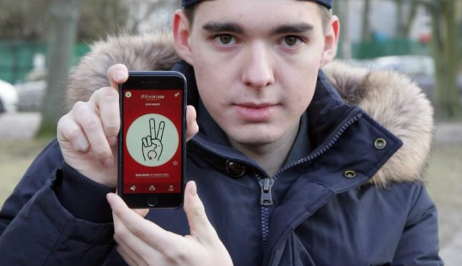

Mateusz Mach: The Story of One Amazing Polish Teen Magda Wojtara
Magda Wojtara
As a fellow Polish person it is not often that Polish contributions to society are in the mainstream media and even rarer when those contributions are made by people of our age group. Enter Mateusz Mach the Polish teen responsible for creating the app “Five.” His is an exception as he has been featured in: History Now, Forbes, Tech Crunch and Business Insider. Yet, there aren’t many teens that know of him regardless of his media coverage.
Mateusz Mach Posing with his app: Five
Mach states openly in interviews that he was influenced greatly by hip-hop culture. Initially, he set out to create an app where cool hand signals, much like those in hip-hop videos, could be used to communicate. It was only later that he realized he could target a huge (and largely ignored) demographic. His app is one where American Sign Language (ASL) speakers are able to send sign language messages to each other. ASL consists of hand signals used to communicate in lieu of words.
The app allowed deaf people to communicate with ASL in a messaging application. According to Cindy Chen, a deaf occupational therapist Mach had spoken with, “Up to 80 percent of deaf people have problems with reading and writing messages.” This demonstrates that there was a huge need for an app like Five for the ASL community. Five is the first of its kind in this respect.
Mach’s experience wasn’t just a eureka moment, however, as he still had to find investors willing to bring this dream into reality. Again, as an avid fan of hip-hop culture Mach showed up to these meetings dressed as he usually was: hoodie, hat and all. Many investors respected this and decided to help him with the app. He finally got $150,000 in funding which was especially difficult in Poland where it is hard to receive venture capital funding. That is because funds are often tied up in nationalized funds from the European Union (EU). This makes the accomplishment even greater.
Taken from a #CEEexchange talk given by Mach about his app.
Mach plans to expand Five to Polish Sign Language and possibly other sign languages in the future as his company grows. He is an International Baccalaureate graduate and will be attending New York University-Abu Dhabi as an economics major.